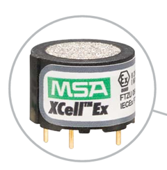
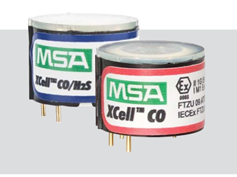
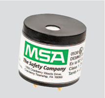

MSA直讀氣體偵測器
職業暴露評估與監控應用
六用VOC氣體偵測器
職業暴露評估與監控應用

- 相關法規
- ALTAIR 5X PID 六用VOC氣體偵測器簡介
- 職業暴露限制(TLV,PEL,STEL,TWA,IDHL)
- 直讀式儀器作業環境監測的應用
- 偵測原理與關鍵概念
- 修正係數(Response Factor, RF) 的應用與重要性
- 應用範例：甲苯 (Toluene)
- 應用範例：甲基乙基酮 (MEK)
- 應用範例：苯 (Benzene)
- 結語與安全注意事項


相關法規一
「四用 或 複合式氣體偵測器」，通常是指能同時偵測以下四種氣體
- 氧氣 (O₂) ： >18%__《缺氧症預防規則》第5條
- 可燃性氣體LEL ：<30%__《職業安全衛生設施規則》第177條
- 硫化氫 (H₂S) ：<10 ppm__《勞工作業場所容許暴露標準》附表一
- 一氧化碳 (CO) ：<35 ppm __《勞工作業場所容許暴露標準》附表一
雇主使勞工從事缺氧危險作業時，應予適當換氣，以保持該作業場所空氣中氧氣濃度在百分之十八以上。
易燃液體之蒸氣、可燃性氣體或爆燃性粉塵達LEL之30%以上時，應即刻使勞工退避至安全場所，並停止使用煙火及其他為點火源之虞之機具，並應加強通風。
勞工作業環境空氣中有害物之濃度應符合下列規定： 全程工作日之時量平均濃度不得超過PEL-TWA。 任何一次連續十五分鐘內之時量平均濃度不得超過STEL。 任何時間均不得超過最高容許濃度。
相關法規二
職業安全衛生設施規則29-1~29-7、277-1
- 雇主應制定局限空間危害防止計畫，其中必須明確規範氧氣、危險物及有害物濃度的測定方式。包含提供必要的測定儀器，在作業前必須確認氧氣及危害物質的濃度，並且在整個作業期間採取連續確認的措施。
- 局限空間作業的「進入許可」上，也應清楚載明氧氣和危害物質的測定結果，並由測定人員簽名確認。
高壓氣體勞工安全規則60、167
- 為確保高壓氣體作業場所的絕對安全，無論是製造設備或消費設備，只要存在可燃性氣體或毒性氣體洩漏並積滯的潛在風險，都必須強制設置氣體洩漏檢知警報設備。
缺氧症預防規則4、16、18、23
- 雇主必須備有必要的氧氣濃度測定儀器，並採取措施隨時確認空氣中的氧氣濃度，同時也要密切監測硫化氫等其他有害氣體濃度。
- 雇主必須在每日作業開始前、勞工離開作業場所後再次開始作業前，以及當勞工身體出現異狀或換氣裝置有異常時，再次確認作業場所的氧氣及有害氣體濃度。
- 雇主應將包含測定儀器保管場所等重要注意事項，公告於作業場所入口顯眼處。
ALTAIR 5X PID 六用VOC氣體偵測器簡介
結合光電離 (PID) 感測技術與 MSA X 智慧感測器(資料處理、自我診斷和通訊能力)技術。
- 多功能性：它能夠偵測數百種揮發性有機化合物 (VOC) 氣體，並可應用於任何複雜的場合，把測爆炸、測缺氧、測毒害或職業健康評定等功能集為一體。
- 設計優勢：儀器配備吸力強大的內建泵(吸氣能力為0.3公升/分鐘，最遠達 30米)，可節省其他配件和外部零件，操作人員在遠端監控時更易用、更可靠，從而簡化工作。
- 主要用途：ALTAIR 5X PID 偵測儀主要面向受過專門培訓的合格人員，用於在進行風險評估時：
- 評估作業人員接觸可燃、有毒氣體及蒸氣和缺氧環境的潛在暴露危險。
- 確定工作區所需氣體和蒸氣的監控措施
職業暴露限值
- PEL (容許暴露極限):
- 由國家制定閾值(法律)，如我國籍美國OSHA。
- TLV (閾限值):
- 由美國政府工業衛生學家會議 (ACGIH) 提出的建議性職業暴露限值 。
- 代表幾乎所有健康工作者每天重複暴露於該濃度或以下，而不會產生不良健康影響的空氣中化學物質濃度 。
- TWA (工作日8 小時時間加權平均值):
- 勞工可以安全暴露的污染物濃度平均值 。
- STEL (短期暴露極限):
- 指在工作日中的任何時間裡，任一連續15 分鐘時間的加權平均暴露值 。
- 旨在防止短時間暴露引起的刺激、急性或不可逆組織損傷、與劑量相關的毒性效應。
- 特別適用於具有急性影響的物質，並非所有物質都有 STEL 。
- IDLH (立即危及生命或健康濃度) :
- 暴露 10~30 分鐘內，可能會導致死亡、永久性傷害、或無法逃離暴露環境的空氣中污染物濃度。
- 這個值通常用於決定在沒有呼吸防護裝備的情況下，人員可以安全進入受污染區域的最長時間。
Important
TLV 是科學建議值 ，而 PEL 是法律強制執行的限制 。 PEL (容許閾值) 通常會比 TLV 高。
直讀式氣體偵測儀器的實務應用1
- 雇主實施作業環境監測時，得以直讀式儀器有效監測之下列化學性因子： -二氧化碳(CO2)-可以測量 – 紅外線 (IR) 型二氧化碳感測器
- 二硫化碳(CS2)-可以測量 – PID_修正係數為 1.2
- 二氯聯苯胺及其鹽類((3,3-Dichlorobenzidine, C12H10Cl2N2))-原則上可以 – PID_輸入自訂氣體及其修正係數
- 次乙亞胺(Ethyleneimine / Aziridine, C2H5N)-原則上可以 – PID輸入自訂氣體及其修正係數
- 二異氰酸甲苯(Toluene Diisocyanate, TDI, C9H6N2O2)-原則上可以 – PID輸入自訂氣體及其修正係數
- 硫化氫-可以 – 電化學探頭或PID修正係數3.2
- 汞及其無機化合物-目前不行
直讀式氣體偵測儀器的實務應用2
精確度（或再現性/重現性） - 精確性為 ±2 ppm (±5000 ppb) 或 10%，以較大者為準。 - 絕對偏差 (Absolute Deviation)：±2 ppm（等同於 ±5000 ppb）。這表示無論實際濃度多高或多低，儀器的讀數與真實值之間的誤差可能在正負 2 ppm 的範圍內。 - 相對偏差 (Relative Deviation)：10%。這表示儀器的讀數與真實值之間的誤差可能是實際濃度的正負 10%。 - 以較大者為準：是指在實際應用中，會取這兩種計算方式中誤差較大的那個值，作為該濃度下的最大可能偏差。
直讀式氣體偵測儀器的實務應用3
- 可即時評估長短期危害暴露風險安全性
- 即時計算與顯示 STEL / TWA：
- 可顯示當前的氣體讀數、15分鐘時間內的平均暴露值(STEL)、從開機或重置後，8 小時內的平均暴露值(TWA)
- STEL 、 TWA 警報功能：
- 內建高低警報、STEL警報和 TWA 警報(亦可以手動重置)
- 使用不同偵測模式測量多種氣體
- 探頭(sensors)多樣選配性：
- VOC揮發性有機化合物 (PID)
- 氧氣與有毒氣體 (電化學探頭)
- 可燃性氣體 (觸媒燃燒探頭)
- 即時計算與顯示 STEL / TWA：
偵測原理與關鍵概念
- 依被測氣體種類常見三種偵測方式
| 觸媒燃燒式 | 電化學反應式 | PID | |
|---|---|---|---|
| 偵測物質 | 可燃性氣體 | 氧氣、特定有毒氣體 | 揮發性有機化合物(VOCs) |
| MSA sensors |  |  |  |
註：探頭(sensors)細節可洽產品代理商或產品經理
修正係數(Response Factor, RF) 的應用與重要性
修正係數是實現精確 VOC 偵測的關鍵。
- 轉換為實際濃度：PID偵測器通常使用異丁烯作為校準氣體，並將異丁烯的修正係數設為 1。當偵測其他 VOCs時，儀器會先偵測到一個相當於異丁烯的等效值。此時，就需要使用該目標氣體的修正係數，將這個異丁烯等效值轉換為目標氣體的實際濃度。這是透過將儀器讀數（已校準為異丁烯）乘以修正係數來實現的 。
- 實際目標化學品濃度 = 目標化學品修正係數 × 儀器報告的濃度。
- 範例：如果偵測己烷時儀器讀數為 100 ppm(異丁烯等效值)，而己烷的修正係數為 4.5，則實際的己烷濃度為 4.5 × 100 ppm = 450 ppm 。
- 擴展偵測氣體種類：即使儀器預設列表中沒有某種特定氣體，只要該氣體的修正係數已知或可以透過實驗測定，使用者就可以將其輸入到儀器中，從而擴展儀器的偵測能力。
- 警報設定：在設定氣體的警報值（如暴露值、STEL、TWA）時，必須考量修正係數。儀器會利用使用者指定目標氣體的修正係數將信號轉換為正確的濃度，從而觸發精確的警報 。
應用範例：甲苯 (Toluene)
- 感測器(探頭)類型：PID
- 設定甲苯修正係數(RF)：(10.6eV PID) 為 0.53
- 實際偵測流程與警報設定：
- 儀器校準：將 ALTAIR 5X PID 儀器以 100 ppm 異丁烯作為量程氣體進行校準。
- 設定目標氣體：在儀器設定中選擇「甲苯」作為目標 VOC 氣體。
- 讀數解釋：當偵測到甲苯時，顯示屏上的讀數將自動修正為實際的甲苯 ppm 值。
- 警報值設定：PID 感測器的出廠預設值(low 50 ppm，high 100 ppm，STEL 25 ppm，TWA 10 ppm。(使用者得根據所偵測的特定 VOC (例如甲苯) 及其所選用的修正係數，來更改 VOC 的低警報和高警報值)。
應用範例：硫化氫 (hydrogen sulfide) H2S
- 感測器類型：電化學感測器。(偵測範圍：0-200 ppm ，解析度：1 ppm)。
- 反應時間 (Response time)：典型 t(90)<15 秒 (正常溫度)。
- 警報值預設(ppm)：LOW 10，HIGH 15，STEL 15，TWA 10 ppm。
- 當氣體濃度達到或超過警報設定點或 STEL/TWA 限制時，設備會顯示並閃爍警報訊息及對應氣體濃度、開啟背光、發出警報聲 、警報 LED 閃爍 、並觸發震動警報 。
- 與磷化氫(PH3) 感測器的交互影響 (Cross Sensitivity)：如果 ALTAIR 5X 檢測器同時配置了 H2S 和 PH3 感測器，長時間暴露於 H2S會導致 PH3 感測器的靈敏度逐漸下降並縮短其壽命，在某些情況下甚至會縮短至數個月。
氣體偵測器使用注意事項
1.操作人員需詳讀手冊與認識儀器操作功能。 2.使用前先檢查校正，必要時調整(FAS)及執行BUMP test。 3.曝露於矽化物、矽酸鹽、含鉛混合物(如有鉛汽油)、硫化氫或高汙染程度時需更常校正檢查。 4.不能量測可燃性的粉塵。 5.等待精確的讀值，回應時間依氣體/蒸氣濃度和取樣管長度為基準變化。 6.勿在具可燃性氣體的環境中充電使用。 7.體偵測器是預警,不是分析設備。 8.讀值為負:瞬間受到大量氣體的汙染導致電流快速上升與下降造成。(請在一般環境先做FAS或ZERO)。
結語與安全注意事項
- 正確使用與培訓：ALTAIR 5X PID 多氣體偵測儀僅供受過MSA專門培訓的合格人員。
- 日常檢查：建議每天使用前執行流量阻塞測試和快速測試(bump test)，以驗證儀器是否正常工作。
- 環境因素考量：壓力、濕度、溫度等環境因素可能影響感測器讀數，應予以注意。
- 維護與校準：定期對儀器進行清潔、維護和校準，以確保其準確性。 持續學習：儀器使用者應不斷擴展和更新其知識與技能，以應對不斷變化的環境和技術。
- 注意事項：若目標化合物的暴露限值低於 0.1 ppm，不應使用 ALTAIR 5X PID 偵測儀(包含其他偵測儀器，除非該產品已標註可偵測極低濃度之用途)，否則可能導致過度暴露，造成人員傷亡。
讓MSA與您一起維護勞工健康與安全。

prepared by River Ho. 20250819